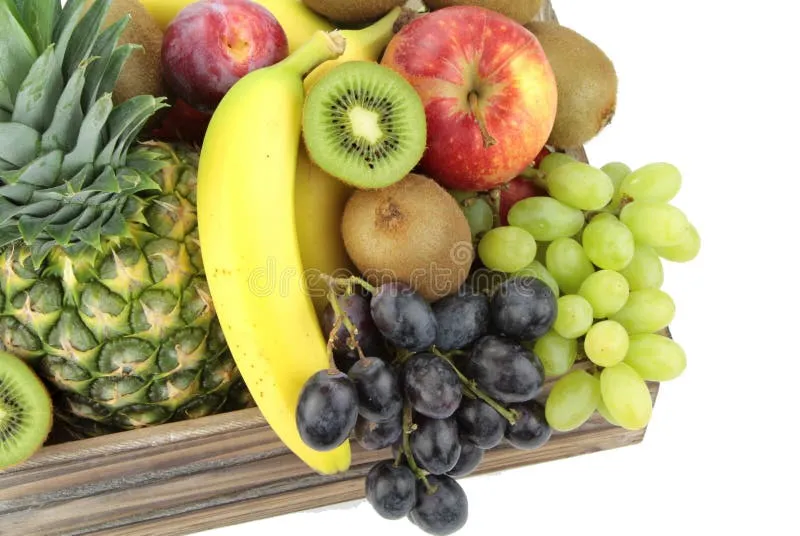

Historia y Misión
2019 — Los inicios
VerdeVida Market nace como un pequeño puesto de mercado local, con la idea de acercar productos orgánicos a familias de la ciudad.
2022 — Crecimiento
Ampliamos nuestra red de agricultores aliados y lanzamos el servicio de entrega a domicilio.
Hoy — Nuestra misión
Dar a conocer y facilitar la adquisición de productos orgánicos, transmitiendo confianza y resaltando la calidad de lo natural.

Valores de la Empresa
- Sostenibilidad — Trabajamos con prácticas agrícolas que respetan el medio ambiente.
- Transparencia — Informamos con claridad el origen y proceso de cada producto.
- Comunidad — Apoyamos directamente a agricultores y productores locales.
- Calidad — Seleccionamos cuidadosamente cada producto que llega a tu mesa.
Equipo de Trabajo
Un grupo comprometido con la alimentación saludable y sostenible.
LR
Lucía Ramos
Fundadora y Gerente GeneralJC
Jhonatan Cusi
Jefe de LogísticaAP
Andrea Paredes
NutricionistaDQ